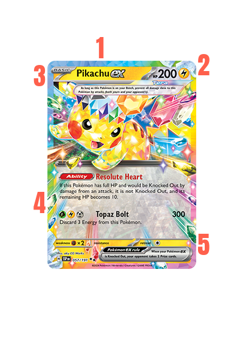
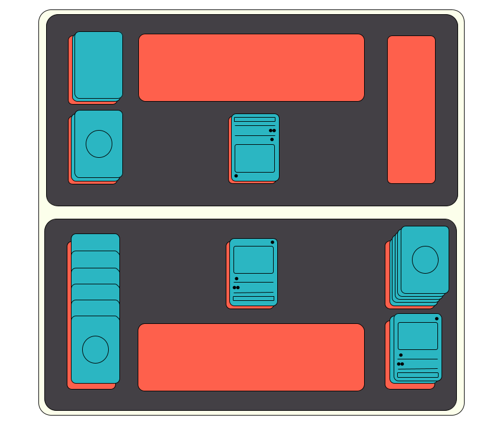

How to Play the Pokemon TCG!
Your First Steps Into the World of the Pokemon TCG
New to the Pokémon Trading Card Game? You’re in the right place! The How to Play section of PokePro is designed to make learning
the basics easy and fun, even if you’ve never played before. Here, we’ll guide you through everything you need to know, from
understanding card types and setting up a game to mastering the flow of battle. With clear tutorials, interactive guides, and
helpful tips, you’ll be ready to jump into your first match in no time. Let’s get started on your journey to becoming a Pokémon
TCG trainer!
First, lets look at a standard Pokémon card. Each card contains a lot of information! It might even seem overwhelming, but
don't worry. Overtime you'll develop the ability to quickly find the information you need, while leaving the extra detail
for later.
- At the top is the card name. When building a deck, you may only have 4 cards of the same name in your deck.
- In the top right is the HP and TYPE. HP stands for Hit Points, and refers to how much damage it can take before being
knocked out. The type is what matters when it comes to the weaknesses and advantages shown at the bottom of the card.
The type can also sometimes be relevant in type-specific abilities.
- The top left shows the Pokemon's "stage." This refers to evolution which we will explain more later.
- The middle section of the card shows attacks an abilities. Attacks have energy symbols showing their cost, and will
usually have a damage amount shown on the right. Abilities are hard to distinguish but if you look closely, they always have a
big red label that says "ability"
- Finally, on the bottom right you can see the Pokemon's retreat cost. This refers to how much energy you must dispose in
order to retreat that Pokemon.

Don't worry if you don't remember all of that, you can always refer back to this page later. Now, let's look at the playmat:

- Active Spot: This is where the "Active" Pokemon resides. The "Active" Pokemon is the one that is in combat with the
opponent's active Pokemon. It will usually use attacks to damage the opponent's active pokemon, and recieve damage the
same way.
- Prize Cards: Whenever you knock out an opponent's Pokemon, you take a prize card! The first player to draw all 6 of their
prize cards first wins!
- Bench: The bench can hold up to 5 Pokemon. This is where you can prepare your Pokemon before moving them to the Active
Spot. Whenever the Active Pokemon is knocked out, then a Pokemon from the bench must take its place. If there aren't any,
then that players loses.
- Deck: Each player starts with their own deck of 60 cards to play the game. While both players know how many cards are in
each deck, no one can look at or change the order of the cards in either player's deck unless a card says so.
- Each player has their own discard pile. Cards taken out of play go to the discard pile, unless a card is played that says
otherwise. Typically when a Pokémon is Knocked Out, it and any attached cards (such as Energy cards) are sent to its
owner's discard pile.
To start playng your first game of Pokemon, we'd reccomend using a basic pre-built deck you can easily find at places like Walmart or Target. The
"ex Battle Decks" tend to go for $15 or less, and are a great way to start learning for cheap. Or, if you want a slightly stronger
deck, the "Delux Battle Decks" only cost a few bucks more, and are considerably stronger.
- First: Shake your opponent's hand, and shuffle your deck. Flip a coin to decide who goes first. Draw 7 cards, and chose a "basic"
pokemon you find there to be your "active pokemon" and set it face down in the active spot. If you don't find one, show your hand
to your opponent, shuffle it back into your deck, and draw a new 7 cards. Your opponent gets to draw an extra card. Once you've
both chosen an active Pokemon, you may put up to 5 other "basic" Pokemon from your hand on to your bench face down.
- Now, set aside 6 cards from the top of your deck face down. These are your "Prize Cards"
- Once both players are ready, flip over both of the "Active" Pokemon, and all of the benched Pokemon. The first player may now draw
a card, and begin his turn!